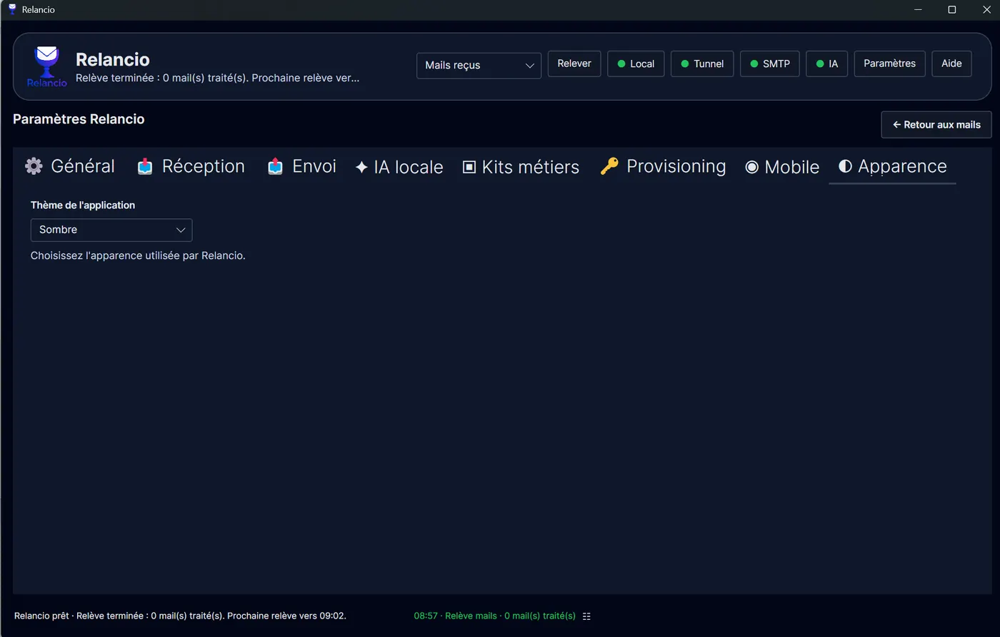

Relancio
Dépannage et glossaire
Résoudre les problèmes courants et comprendre les termes techniques.
Problèmes courants
Le voyant IA n’est pas vert
Vérifiez qu’Ollama est disponible, que l’adresse locale est correcte, que le modèle est installé et que le test d’assistance IA fonctionne. Si l’assistance IA locale n’est pas encore installée, utilisez l’installation automatique proposée dans l’onglet IA locale.
Le voyant SMTP n’est pas vert
Vérifiez serveur, port, sécurité, identifiant, mot de passe et mot de passe d’application éventuel. Lancez un email de test depuis l’onglet Envoi.
Aucun mail n’apparaît
Vérifiez la configuration POP3/IMAP, la fréquence de relève, le bouton Relever, et les identifiants du compte technique.
L’accès web/mobile ne fonctionne pas
Vérifiez que l’accès a été provisionné, que le mot de passe web/mobile est défini, que l’adresse privée est correcte et que le tunnel est actif lorsque l'accès distant est attendu.
Gmail refuse la connexion
Vérifiez les paramètres POP/IMAP du compte Google et utilisez un mot de passe d’application lorsque Gmail l’exige.
Glossaire rapide
- POP3
- Mode de réception qui relève les messages d'une boîte mail.
- IMAP
- Mode de réception plus orienté synchronisation avec la boîte distante.
- SMTP
- Protocole utilisé pour envoyer les emails.
- Ollama
- Serveur IA local permettant d'utiliser des modèles génératifs sur le poste.
- Provisioning
- Association d'un poste Relancio à une adresse privée d'accès distant, via un code fourni par l'auteur.
- Kit métier
- Ensemble de règles et prompts adaptés à un contexte professionnel.
Apparence
Relancio propose un choix de thème dans l'onglet Apparence. La documentation reprend le style sombre et bleu de l'application pour rester cohérente.
